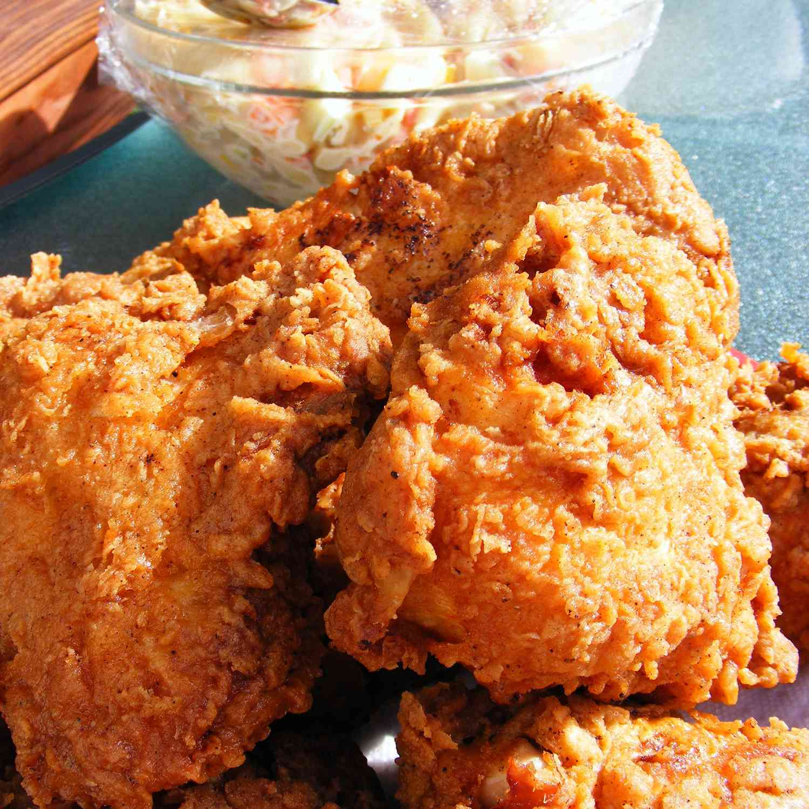

This fried chicken batter yields the crispiest, spiciest, homemade fried chicken I have ever tasted! It has been a picnic favorite in my family for years and tastes equally good served hot or cold.
The crispiest fried chicken is just a few ingredients away when you use this top-rated fried chicken batter!
Before you batter the chicken for frying, you’ll need to make a beer batter and a seasoned flour mixture. These are the ingredients you'll need:
You’ll find the full, step-by-step recipe below — but here’s a brief overview of what you can expect when you make triple-dipped fried chicken at home: